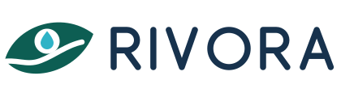
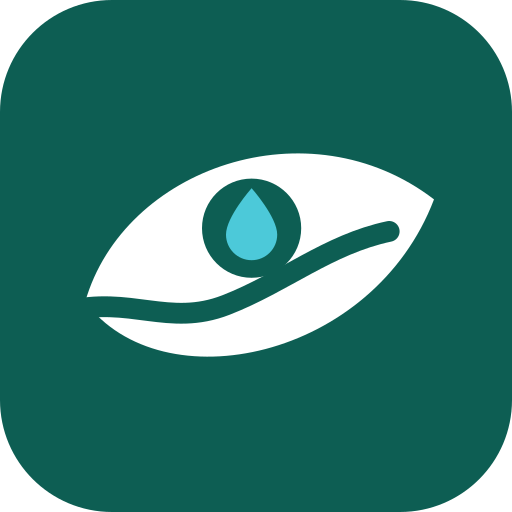
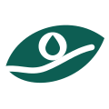

<title>Logo RIVORA</title>
<meta name="claude:viewport-fit-sides" content="cover">
<link rel="preconnect" href="https://fonts.googleapis.com">
<link rel="stylesheet" href="https://fonts.googleapis.com/css2?family=Lexend:wght@400;600;700&family=Plus+Jakarta+Sans:wght@400;500;700&family=JetBrains+Mono:wght@500&display=swap">
<style>
/* Lembar merek: satu kolom baca, panel logo besar di atas, lalu filosofi, warna, aturan, referensi */
:root {
  --bg: #f4f6f3;
  --kartu: #ffffff;
  --teks: #15231f;
  --teks-2: #4b5a55;
  --garis: #dfe5e1;
  --hijau: #0d5e53;
  --biru: #2fb3c6;
  --navy: #17324d;
  --aksen-teks: #0d5e53;
  --panel-terang: #eef3ef;
  --f-judul: "Lexend", "Segoe UI", system-ui, sans-serif;
  --f-isi: "Plus Jakarta Sans", "Segoe UI", system-ui, sans-serif;
  --f-kode: "JetBrains Mono", ui-monospace, Consolas, monospace;
}
@media (prefers-color-scheme: dark) {
  :root:not([data-theme="light"]) {
    --bg: #0f1a18; --kartu: #15231f; --teks: #e6eeeb; --teks-2: #a7b6b1; --garis: #26362f;
    --aksen-teks: #6fd0c0; --panel-terang: #e9f0ec; color-scheme: dark;
  }
}
:root[data-theme="dark"] {
  --bg: #0f1a18; --kartu: #15231f; --teks: #e6eeeb; --teks-2: #a7b6b1; --garis: #26362f;
  --aksen-teks: #6fd0c0; --panel-terang: #e9f0ec; color-scheme: dark;
}
* { box-sizing: border-box; }
body {
  background: var(--bg); color: var(--teks); font-family: var(--f-isi); font-size: 16px; line-height: 1.6;
  padding-left: max(16px, env(safe-area-inset-left, 0px)); padding-right: max(16px, env(safe-area-inset-right, 0px));
  padding-block: 40px 64px;
}
.wadah { max-width: 980px; margin: 0 auto; display: grid; gap: 56px; }
h1, h2, h3 { font-family: var(--f-judul); text-wrap: balance; line-height: 1.2; margin: 0; }
h1 { font-size: clamp(28px, 4vw, 40px); font-weight: 700; }
h2 { font-size: 24px; font-weight: 600; }
h3 { font-size: 18px; font-weight: 600; }
p { margin: 0; }
.label { font-family: var(--f-kode); font-size: 12px; letter-spacing: .08em; text-transform: uppercase; color: var(--aksen-teks); }
.pembuka { display: grid; gap: 12px; max-width: 68ch; }
.pembuka p { color: var(--teks-2); }
.slogan { font-family: var(--f-judul); font-weight: 600; color: var(--teks); }

.panel-logo { display: grid; grid-template-columns: 1.4fr 1fr; gap: 16px; }
.panel { border-radius: 16px; display: grid; place-items: center; padding: 48px 24px; min-width: 0; }
.panel.terang { background: var(--panel-terang); }
.panel.gelap { background: #17324d; }
.panel img { width: 100%; height: auto; }
.panel.terang img { max-width: 460px; }
.panel.gelap img { max-width: 180px; }

.bagian { display: grid; gap: 20px; }
.bagian > p { color: var(--teks-2); max-width: 68ch; }

.anatomi { display: grid; grid-template-columns: minmax(0, 300px) minmax(0, 1fr); gap: 32px; align-items: start; }
.anatomi figure { margin: 0; background: var(--kartu); border: 1px solid var(--garis); border-radius: 16px; padding: 24px; }
.anatomi svg { width: 100%; height: auto; display: block; }
.anatomi svg text { font-family: var(--f-kode); font-size: 7px; fill: var(--teks-2); }
.elemen { list-style: none; margin: 0; padding: 0; display: grid; gap: 18px; }
.elemen li { display: grid; grid-template-columns: 28px minmax(0, 1fr); gap: 12px; }
.no { font-family: var(--f-kode); font-size: 13px; width: 28px; height: 28px; border-radius: 50%; display: grid; place-items: center; background: var(--hijau); color: #fff; }
.elemen h3 { margin-bottom: 4px; }
.elemen p { color: var(--teks-2); }

.warna { display: grid; grid-template-columns: repeat(4, minmax(0, 1fr)); gap: 12px; }
.sampel { border: 1px solid var(--garis); border-radius: 12px; overflow: hidden; background: var(--kartu); }
.sampel .blok { height: 84px; }
.sampel div:last-child { padding: 12px; display: grid; gap: 2px; }
.sampel b { font-family: var(--f-judul); font-weight: 600; font-size: 15px; }
.sampel code { font-family: var(--f-kode); font-size: 13px; color: var(--teks-2); }
.sampel span { font-size: 13px; color: var(--teks-2); }

.ukuran { display: flex; flex-wrap: wrap; gap: 28px; align-items: end; background: var(--kartu); border: 1px solid var(--garis); border-radius: 16px; padding: 24px; }
.ukuran figure { margin: 0; display: grid; gap: 8px; justify-items: center; }
.ukuran figcaption { font-family: var(--f-kode); font-size: 12px; color: var(--teks-2); }

.aturan { display: grid; grid-template-columns: repeat(2, minmax(0, 1fr)); gap: 12px 32px; margin: 0; padding: 0; list-style: none; }
.aturan li { border-top: 1px solid var(--garis); padding-top: 12px; color: var(--teks-2); }
.aturan b { color: var(--teks); }

.referensi { display: grid; grid-template-columns: repeat(2, minmax(0, 1fr)); gap: 16px; }
.ref { background: var(--kartu); border: 1px solid var(--garis); border-radius: 16px; padding: 24px; display: grid; gap: 12px; align-content: start; }
.ref .label { color: var(--teks-2); }
.ref dl { margin: 0; display: grid; gap: 10px; }
.ref dt { font-weight: 700; font-size: 14px; }
.ref dd { margin: 0; color: var(--teks-2); font-size: 15px; }

.berkas { overflow-x: auto; background: var(--kartu); border: 1px solid var(--garis); border-radius: 16px; }
table { border-collapse: collapse; width: 100%; font-size: 14px; }
th, td { text-align: left; padding: 10px 16px; border-bottom: 1px solid var(--garis); vertical-align: top; }
th { font-family: var(--f-judul); font-weight: 600; }
td code { font-family: var(--f-kode); font-size: 13px; white-space: nowrap; }
tr:last-child td { border-bottom: 0; }

@media (max-width: 760px) {
  .panel-logo, .anatomi, .referensi, .aturan { grid-template-columns: minmax(0, 1fr); }
  .warna { grid-template-columns: repeat(2, minmax(0, 1fr)); }
  .anatomi figure { max-width: 340px; }
}
</style>

<main class="wadah">
  <header class="pembuka">
    <span class="label">Identitas visual · Tim Abis Ini ke WDP</span>
    <h1>Logo RIVORA</h1>
    <p class="slogan">See The Flood Before You See The Water.</p>
    <p>Sebuah daun yang sekaligus berbentuk mata. Di dalam matanya ada tetes hujan, di bawahnya mengalir saluran air yang lancar. Logo ini merangkum cara kerja RIVORA: melihat kondisi saluran lebih dulu, supaya kelurahan bisa bertindak sebelum hujan berubah menjadi genangan.</p>
  </header>

  <section class="panel-logo" aria-label="Logo utama">
    <div class="panel terang"></div>
    <div class="panel gelap"></div>
  </section>

  <section class="bagian">
    <span class="label">Filosofi</span>
    <h2>Satu bentuk, dua makna: daun dan mata</h2>
    <div class="anatomi">
      <figure>
        <svg viewBox="0 0 140 130" role="img" aria-label="Anatomi simbol dengan lima penanda">
          <defs>
            <mask id="m-anatomi"><rect x="-10" y="-10" width="160" height="160" fill="#fff"/><path d="M0 77 C 20 72, 32 82, 50 75 S 82 56, 101 52" fill="none" stroke="#000" stroke-width="6.5" stroke-linecap="round"/><circle cx="58" cy="51" r="15.5" fill="#000"/></mask>
          </defs>
          <g transform="translate(10 5)">
            <path mask="url(#m-anatomi)" fill="#0d5e53" d="M6 74 C 18 32, 76 12, 115 42 C 96 92, 30 106, 6 74 Z"/>
            <path fill="#2fb3c6" d="M58 38.5 C 58 38.5, 66 47.5, 66 53 A8 8 0 0 1 50 53 C 50 47.5, 58 38.5, 58 38.5 Z"/>
            <g font-weight="500">
              <circle cx="96" cy="70" r="5" fill="#17324d"/><text x="96" y="72.4" text-anchor="middle" style="fill:#fff">1</text>
              <circle cx="24" cy="44" r="5" fill="#17324d"/><text x="24" y="46.4" text-anchor="middle" style="fill:#fff">2</text>
              <circle cx="58" cy="26" r="5" fill="#17324d"/><text x="58" y="28.4" text-anchor="middle" style="fill:#fff">3</text>
              <circle cx="38" cy="78" r="5" fill="#17324d"/><text x="38" y="80.4" text-anchor="middle" style="fill:#fff">4</text>
              <circle cx="120" cy="34" r="5" fill="#17324d"/><text x="120" y="36.4" text-anchor="middle" style="fill:#fff">5</text>
            </g>
          </g>
        </svg>
      </figure>
      <ol class="elemen">
        <li><span class="no">1</span><div><h3>Daun</h3><p>Alam dan lingkungan kelurahan yang ingin dijaga. Sejalan dengan subtema Sustainable Development: saluran yang bersih menjaga kota tetap hijau dan sehat.</p></div></li>
        <li><span class="no">2</span><div><h3>Bentuk mata</h3><p>Kata kunci "see" pada slogan. Mata juga mewakili AI vision yang membaca foto saluran dan menilai tingkat sumbatan, dari bersih sampai berat.</p></div></li>
        <li><span class="no">3</span><div><h3>Tetes hujan di dalam iris</h3><p>Hujan yang sudah terlihat di prakiraan cuaca, sebelum turun. Iris berbentuk lingkaran juga mengingatkan pada lensa kamera ponsel yang dipakai petugas dan warga untuk melapor.</p></div></li>
        <li><span class="no">4</span><div><h3>Garis aliran</h3><p>Saluran drainase yang lancar, sekaligus tulang daun. Letaknya di bawah tetes: air masih berada di saluran dan belum menjadi genangan. Aliran keluar dari pangkal daun, tanda air dialirkan pergi, bukan tertahan.</p></div></li>
        <li><span class="no">5</span><div><h3>Ujung daun yang naik</h3><p>Arah naik ke kanan atas melambangkan kondisi yang membaik setelah saluran ditangani, seperti skor RW yang turun setelah verifikasi sebelum dan sesudah.</p></div></li>
      </ol>
    </div>
    <p>Tulisan RIVORA digambar sebagai garis tunggal berujung bulat, jadi tidak bergantung pada font tertentu. Huruf O dibuat lingkaran penuh supaya menggemakan iris pada simbol.</p>
  </section>

  <section class="bagian">
    <span class="label">Warna</span>
    <h2>Diambil dari dasbor yang sudah ada</h2>
    <p>Hijau dan navy sama persis dengan token dasbor, jadi logo langsung serasi di kepala halaman. Merah, kuning, dan hijau terang sengaja tidak dipakai karena dasbor memakainya untuk level risiko RW.</p>
    <div class="warna">
      <div class="sampel"><div class="blok" style="background:#0d5e53"></div><div><b>Hijau Saluran</b><code>#0D5E53</code><span>Daun. Sama dengan --teal-gelap</span></div></div>
      <div class="sampel"><div class="blok" style="background:#2fb3c6"></div><div><b>Biru Hujan</b><code>#2FB3C6</code><span>Tetes air di latar terang</span></div></div>
      <div class="sampel"><div class="blok" style="background:#4cc9d9"></div><div><b>Biru Hujan Terang</b><code>#4CC9D9</code><span>Tetes air di latar gelap</span></div></div>
      <div class="sampel"><div class="blok" style="background:#17324d"></div><div><b>Navy Kelurahan</b><code>#17324D</code><span>Tulisan. Sama dengan --navy</span></div></div>
    </div>
  </section>

  <section class="bagian">
    <span class="label">Ukuran kecil</span>
    <h2>Tetap terbaca sampai 16 piksel</h2>
    <div class="ukuran">
      <figure><figcaption>ikon app 96</figcaption></figure>
      <figure><figcaption>48</figcaption></figure>
      <figure><figcaption>32</figcaption></figure>
      <figure><figcaption>favicon 16</figcaption></figure>
      <figure><figcaption>satu warna</figcaption></figure>
    </div>
  </section>

  <section class="bagian">
    <span class="label">Aturan pakai</span>
    <h2>Supaya logo tidak berubah makna</h2>
    <ul class="aturan">
      <li><b>Tetes selalu tegak.</b> Air jatuh lurus ke bawah. Jangan memutar simbol.</li>
      <li><b>Ruang kosong</b> di sekeliling logo minimal setinggi tetes air.</li>
      <li><b>Ukuran minimum:</b> simbol 16 px, logo lengkap lebar 96 px.</li>
      <li><b>Latar gelap</b> memakai versi putih. Jangan memberi bayangan atau gradasi.</li>
      <li><b>Jangan mewarnai tetes merah atau kuning,</b> karena warna itu berarti level risiko di dasbor.</li>
      <li><b>Jangan memisah tulisan</b> dari simbol dengan jarak yang berbeda dari berkas aslinya.</li>
    </ul>
  </section>

  <section class="bagian">
    <span class="label">Referensi</span>
    <h2>Empat referensi dan apa yang kami ambil</h2>
    <p>Keempat logo ini bukan milik tim. Yang diambil hanya prinsipnya, bukan bentuknya.</p>
    <div class="referensi">
      <article class="ref">
        <span class="label">Referensi 1</span>
        <h3>Wajah klasik bermahkota daun</h3>
        <dl>
          <dt>Filosofi</dt><dd>Mahkota daun adalah lambang kehormatan dan kebijaksanaan. Wajah yang menatap lurus ke depan menggambarkan sosok penjaga yang tenang dan punya visi.</dd>
          <dt>Hubungan dengan RIVORA</dt><dd>RIVORA berperan sebagai penjaga kelurahan yang memandang ke depan, ke hujan yang belum turun. Ide tatapan ke depan inilah yang menjadi bentuk mata pada logo kami.</dd>
          <dt>Yang kami ambil</dt><dd>Siluet padat satu warna dengan detail dari ruang negatif. Aliran dan iris pada logo kami juga berupa potongan, bukan garis tambahan.</dd>
        </dl>
      </article>
      <article class="ref">
        <span class="label">Referensi 2</span>
        <h3>Penyu dari daun dan gelembung</h3>
        <dl>
          <dt>Filosofi</dt><dd>Penyu hidup di dua dunia, darat dan air, dan dikenal tahan lama. Tempurungnya dibentuk dari daun sehingga alam darat dan laut menyatu dalam satu figur.</dd>
          <dt>Hubungan dengan RIVORA</dt><dd>Genangan terjadi di titik pertemuan air dan lingkungan kota. RIVORA ingin kelurahan tangguh menghadapi musim hujan, seperti penyu yang tangguh di dua alam.</dd>
          <dt>Yang kami ambil</dt><dd>Daun yang dibelah garis lengkung dan elemen air berbentuk bulat. Pada logo kami gelembung menjadi tetes hujan, dan belahan menjadi aliran saluran.</dd>
        </dl>
      </article>
      <article class="ref">
        <span class="label">Referensi 3</span>
        <h3>Pelari dan gunung dengan matahari</h3>
        <dl>
          <dt>Filosofi</dt><dd>Pelari dalam posisi siap start digabung dengan gunung, ditambah matahari sebagai tujuan. Pesannya: bersiap sebelum mulai mendaki.</dd>
          <dt>Hubungan dengan RIVORA</dt><dd>Bersiap sebelum mulai sama dengan inti RIVORA: daftar prioritas dikerjakan sebelum hujan lebat datang, bukan saat banjir sudah terjadi.</dd>
          <dt>Yang kami ambil</dt><dd>Satu bentuk yang dibaca dua cara (pelari = gunung, daun = mata) dan satu warna aksen saja. Matahari oranye di referensi menjadi tetes biru di logo kami.</dd>
        </dl>
      </article>
      <article class="ref">
        <span class="label">Referensi 4</span>
        <h3>Tangan menadah tunas</h3>
        <dl>
          <dt>Filosofi</dt><dd>Tangan yang menadah menunjukkan kepedulian dan merawat. Tunas yang tumbuh dari tangan itu adalah hasil dari tindakan kecil yang dilakukan bersama.</dd>
          <dt>Hubungan dengan RIVORA</dt><dd>RIVORA hidup dari laporan petugas kebersihan, siskamling, dan warga. Satu foto saluran dari satu tangan sudah cukup untuk mencegah genangan satu RW.</dd>
          <dt>Yang kami ambil</dt><dd>Garis monoline dengan ujung bulat yang ramah. Gaya ini kami pakai untuk tulisan RIVORA dan garis aliran.</dd>
        </dl>
      </article>
    </div>
  </section>

  <section class="bagian">
    <span class="label">Berkas</span>
    <h2>Lokasi di repo</h2>
    <div class="berkas">
      <table>
        <thead><tr><th>Berkas</th><th>Untuk</th></tr></thead>
        <tbody>
          <tr><td><code>dashboard/public/brand/rivora-logo.svg</code></td><td>Logo lengkap di latar terang: PPT, laporan, kop dokumen</td></tr>
          <tr><td><code>rivora-logo-putih.svg</code></td><td>Logo lengkap di latar gelap atau foto</td></tr>
          <tr><td><code>rivora-mark.svg</code>, <code>rivora-mark-putih.svg</code>, <code>rivora-mark-mono.svg</code></td><td>Simbol saja: kepala dasbor, stiker, cap satu warna</td></tr>
          <tr><td><code>rivora-ikon-app.svg</code></td><td>Favicon dasbor dan ikon aplikasi</td></tr>
          <tr><td><code>*-1024.png</code>, <code>*-2100.png</code></td><td>PNG transparan untuk Canva, PPT, dan ikon launcher Flutter</td></tr>
        </tbody>
      </table>
    </div>
  </section>
</main>
